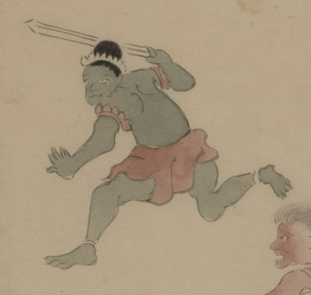

護法童子；ゴホウドウジ，鬼；オニ，剣；ケン

剣を持った護法童子。肌は緑色で、髪を結い上げて、髪飾りでとめている。赤い肩飾りと腰巻を身につけ、右手で剣を振り上げて、走っている。
出典：親書誌：U426_nichibunken_0150：付喪神絵詞；ツクモガミエコトバ／日付：2010／資源識別子：U426_nichibunken_0150_0095_0000
Copyright (c)2010- International Research Center for Japanese Studies, Kyoto, Japan. All rights reserved.